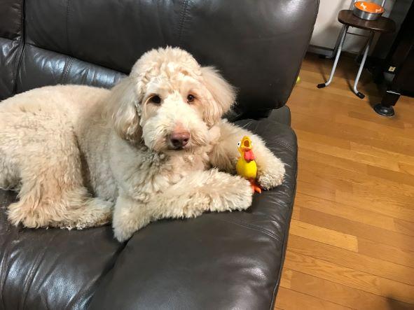
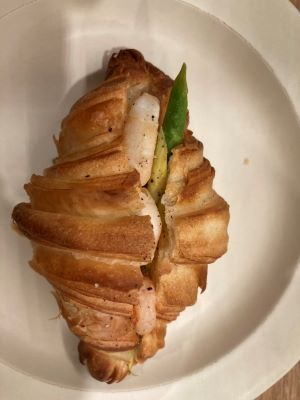
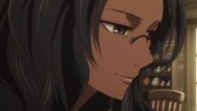

（写真は愛犬のホルンくんです！）
名前
相羽珠音
趣味みたいなものは？
空の写真を撮ること
長所みたいなのはどんなところ？
のめりこむと熱中すること（それがまた短所なのですが、、）
ちょこっとだけ自慢できることは？
ディズニーのキャストでした！（笑）
最近ハマっているものは？
名探偵コナンを見直すこと
最近ものすごく美味い！と思ったのはなに？

奈良で行ったカフェのクロワッサン
「ROKUMEI COFEE」
ちょっと嫌いな食べ物は？
豆腐
まず家に帰ってすることはなに？
靴脱いで、手を洗う
その次にすることは？
お菓子食べます！
朝、出かける何時間前に起きる？
1時間半前くらいか、、？
何フェチ？
色
えらそうな座右の銘は？
神々も精霊たちも君のすぐそばにいる。誰も君を顧見ることがなくとも苦しく悲しく寂しさにあえいでも彼らは君をいつも見ていてくれる。
だから安心して自分自身を救いなさい。（好きなアニメの、台詞です。誰だかわかりますか？）

10年後なにしてる？
自然豊かなところで、リモートワーク
とりあえず集めてるものは？
ご当地Suica
体を流れている血の液体の型は？
おそらくBO
この学校でしっかり勉強しておきたいものをベスト３
- 人間との付き合い方
- 発想力
- 技術
できれば将来就きたい職業ベスト３
- セキュリティに関わること
- 旅客機の運行管理システムの運用、管理
- 防衛省の国防システムの運用、管理
この４年間の学校生活でやってみたいことを３つ
- 皆勤賞
- ほかの学科とのコネクションを作る
- 授業以外でいろいろ作ってみたい